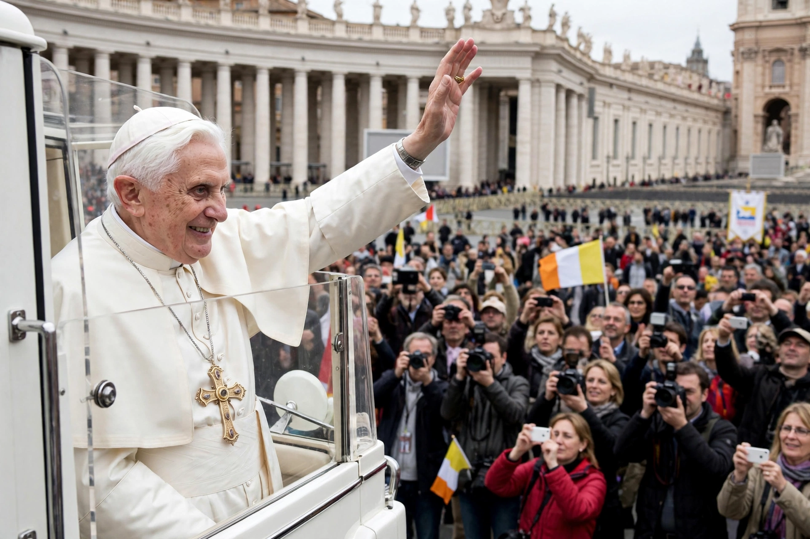

| Pope Benedict XVI | |
 | |
| Born | Joseph Alois Ratzinger, 16 April 1927, Marktl, Bavaria, Germany |
|---|---|
| Died | 31 December 2022 (aged 95), Vatican City |
| Papacy began | 19 April 2005 |
| Papacy ended | 28 February 2013 (resigned) |
| Predecessor | John Paul II |
| Successor | Francis |
Pope Benedict XVI (born Joseph Alois Ratzinger; 16 April 1927 – 31 December 2022) was head of the Catholic Church and sovereign of the Vatican City State from 19 April 2005 until his resignation on 28 February 2013 — the first pope to resign since Gregory XII in 1415, and the first to do so voluntarily since Celestine V in 1294. A distinguished theologian, he had served as prefect of the Congregation for the Doctrine of the Faith under John Paul II.
Ratzinger was born in Marktl am Inn, Bavaria, the son of a policeman. Conscripted into the Hitler Youth and later into the German army as a teenager, he deserted in 1945. He studied theology at Munich, was ordained in 1951, and became a professor at Bonn, Münster, Tübingen and Regensburg. As a young priest-theologian he attended the Second Vatican Council as an adviser to Cardinal Frings and was regarded as a reformer; the upheavals of 1968 pushed him toward a more conservative reading of the Council. In 1977 Paul VI made him Archbishop of Munich and Freising and a cardinal.
As prefect of the CDF from 1981, Ratzinger was John Paul II's doctrinal enforcer, disciplining some proponents of liberation theology and issuing Dominus Iesus (2000). Elected pope in April 2005, he took the name Benedict after Benedict XV and St Benedict of Nursia. His teaching centred on the relationship of faith and reason — the theme of his controversial Regensburg lecture (2006) — and on interpreting Vatican II through a "hermeneutic of continuity." His encyclicals include Deus caritas est (2005), Spe salvi (2007) and Caritas in veritate (2009), the last a major contribution to Catholic social teaching on globalisation and development. He liberalised use of the pre-conciliar Latin Mass (Summorum Pontificum, 2007) and wrote a three-volume Jesus of Nazareth.
Citing his advanced age and declining strength, Benedict announced his resignation on 11 February 2013 — the first voluntary papal resignation in nearly 600 years. He lived as Pope Emeritus in the Mater Ecclesiae Monastery in the Vatican until his death on 31 December 2022, aged 95.